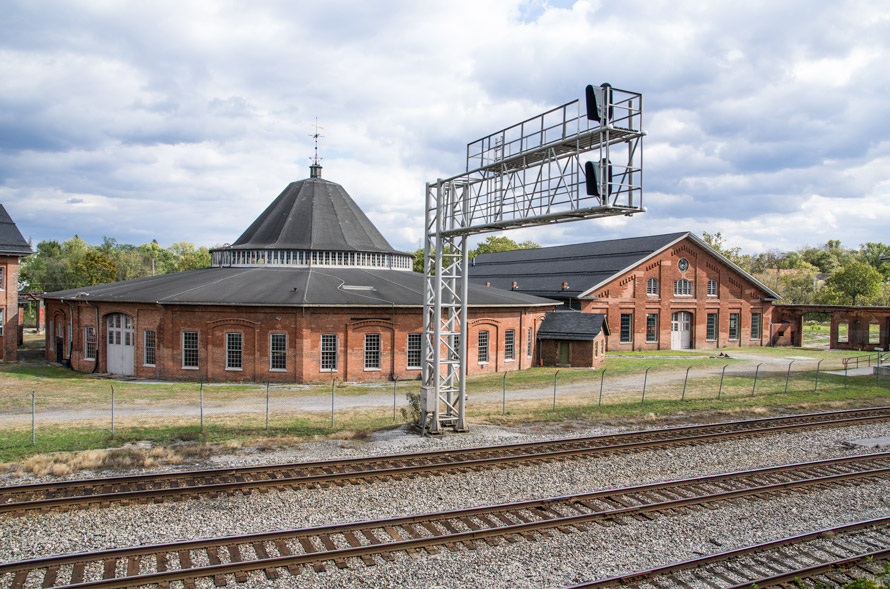

Click here to get a random message:
My name is Anya Ellis. I am an undergrad at the University of Illinois at Chicago (UIC). I am majoring in computer science with a minor in mathematics. Though I go to school in Chicago, I from the wild and wonderful state of West Virginia.
West Virginia is actually where I am currently bunkering at during this pandemic. The state has a rich history and lots of trees, mountains, and animals. Sadly, I have allergies to the wildlife here so I stay indoors most of the time playing video games. Though, I know some outdoor basics so... theoretically we could talk about that. However, I might be sneezing. Achoo!
A List of Some of My Experiences & Projects
- Current Intern at Northrop Grumman
- 1st Place Winner in the section Oral Computer Science Presentations at 2020 Illinois LSAMP Symposium
- Project can be found at ...
- Attended the 2019 Grace Hopper Conference
- My Spanish Language Python website
- This was created during my gap year. The site is basically defunct and you need to know Spanish.
If you want to learn more, check out my resume to the right or the links below.
LinkedInGithub: SunWithIssues
School Github: Refresca
Spanish language Website